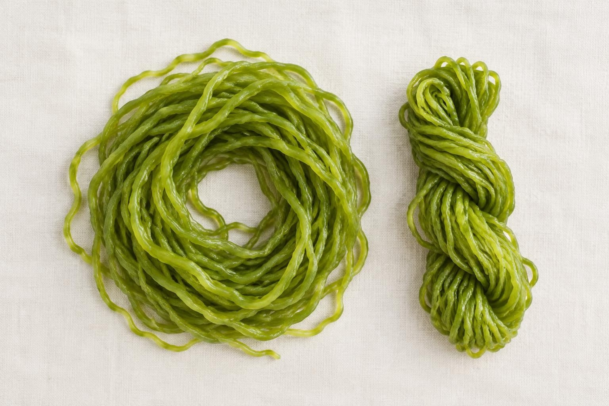

EML-001PLACEHOLDER
Binakol Cotton
- FIBER
- 100% Cotton
- WEIGHT
- 280 GSM
- FINISH
- Hand-loom twill, optical wave
- ORIGIN
- Ilocos, PH
[ EML / TEXTILE RESEARCH UNIT / EST. 2026 ]
Textile innovation and material research. Filipino weaving heritage, the Binakol wave, Piña, Abaca, meets the materials of the future.
Enter the library12 SPECIMENS / PLACEHOLDER DATA
UNDER THE LOUPE





REQUEST SAMPLES / BOOK A VISIT
Book a material session for your collection, request swatches from the library, or commission a custom weave study.